Soie (French for silk, say swah): what a
web is made of.
Soie is a web engine written from scratch in plain C99:
HTML, CSS, JavaScript and video in under 55,000 lines of
code, plus QuickJS and FFmpeg as dependencies. It
fits in a 700 KB download, runs on the
32-bit PCs every big browser has left behind and leaves
the memory of new machines to the work that matters.
Free software, BSD licence. Made for and by SliTaz.
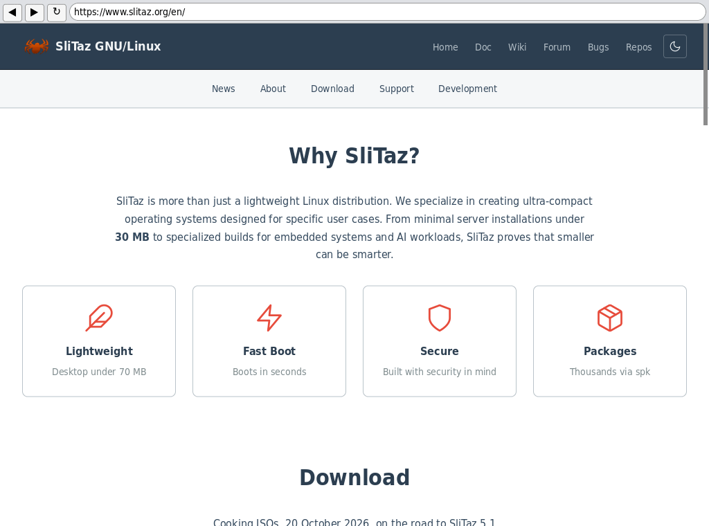
0.7 MBTo download Soie and its X11 browser, against 84 MB for Firefox ESR
1.9 MBInstalled, against 294 MB
13×Less memory than Firefox: 35 MB against 450 MB, on six sites
i486Plus x86_64: one engine, tested on both
Why we wrote Soie
SliTaz has always run on old machines. In ten years the web
engines we relied on left those machines, one after the other.
These are the facts, with their sources.
March 2016
Chrome stops on 32-bit Linux
Google ends Chrome for 32-bit Linux: no more updates, no
more security fixes.
chromium-dev announcement
April 2016
The last WebKitGTK SliTaz can build
WebKitGTK 2.4.11 comes out. It is still the WebKit in the
SliTaz packages today: no release of its series has come
since and the newer ones do not build on our tool chain.
webkitgtk.org
April 2017
Firefox 53 needs a Pentium 4
Firefox ends Linux support for processors older than the
Pentium 4 and the AMD Opteron (SSE2): a Pentium III
or an Athlon XP no longer starts it.
Mozilla support
June 2024
WebKit needs GCC 11.2
WebKit raises its compiler requirement to GCC 11.2, to build
with C++23. A small distribution has to change its whole
tool chain just to follow one library.
WebKit bug 275507
October 2025
Firefox 144, the last for 32-bit Linux
Mozilla ends 32-bit x86 Linux with Firefox 144. Firefox ESR
140 keeps getting security updates "until at least
September 2026".
Mozilla blog
October 2026
Soie 0.1.0
So we wrote our own engine, one a single person can read
from end to end, built with the compilers SliTaz has for
the machines SliTaz runs on. It does not try to be Firefox:
it tries to show the web as it is, with as little as possible.
There is a second reason. A browser that needs half a gigabyte to
show a page takes that memory from everything else and today
everything else includes the AI models people want to run on
their own machine. A light engine is not only for old PCs.
Soie and Firefox, side by side
The same pages, opened in xsoie 0.1.1 and Firefox 153 ESR, on
the same machine, each in a fresh window, scripts on. Soie
needs a thirteenth of the memory and a third of the processor
time; Firefox, which loads in parallel on every core, shows the
page a little sooner.
Memory at its peak
Soie35 MB
Firefox450 MB
Processor time
Soie0.8 s
Firefox2.5 s
Until the page is ready
Soie1.8 s
Firefox1.4 s
Averages over the six pages below.
Page
Memory
CPU
Ready
www.slitaz.org
16 / 392 MB
0.14 / 0.83 s
0.6 / 0.5 s
Wikipedia, Linux
50 / 467 MB
2.46 / 3.80 s
3.3 / 2.0 s
Hacker News
18 / 407 MB
0.11 / 1.16 s
2.0 / 1.6 s
LWN.net
18 / 419 MB
0.13 / 1.16 s
1.5 / 1.4 s
MDN, CSS
24 / 436 MB
0.28 / 1.73 s
1.5 / 1.0 s
GitHub, torvalds/linux
83 / 576 MB
1.56 / 6.35 s
2.2 / 2.0 s
In each cell, Soie / Firefox.
Measured with tools/browser-bench.sh -W from the
Soie sources, October 30 2026 on an Intel i7-13700H under
SliTaz x86_64, live sites, median of 5 runs, the two browsers
taking turns on each page. Each browser is started on an empty
page and left to settle, then sent the address; the clock
starts there. Ready is the last change of the page on screen
(the window less its top 100 pixels) before 2 seconds without
any, sampled about every 0.3 s. CPU is the processor time of all
the browser's processes until ready. Memory is their PSS at its
peak (shared pages counted once). Firefox runs on a fresh
profile started once beforehand, telemetry, studies, updates,
sync and the captive portal check off; TRACE=1
shows every sample.
The same page, two engines
Screenshots of the same 1024×768 view, taken the same minute (October 31, 2026). The fonts differ (Soie uses DejaVu, as SliTaz does), the layout is the page's.
www.slitaz.org
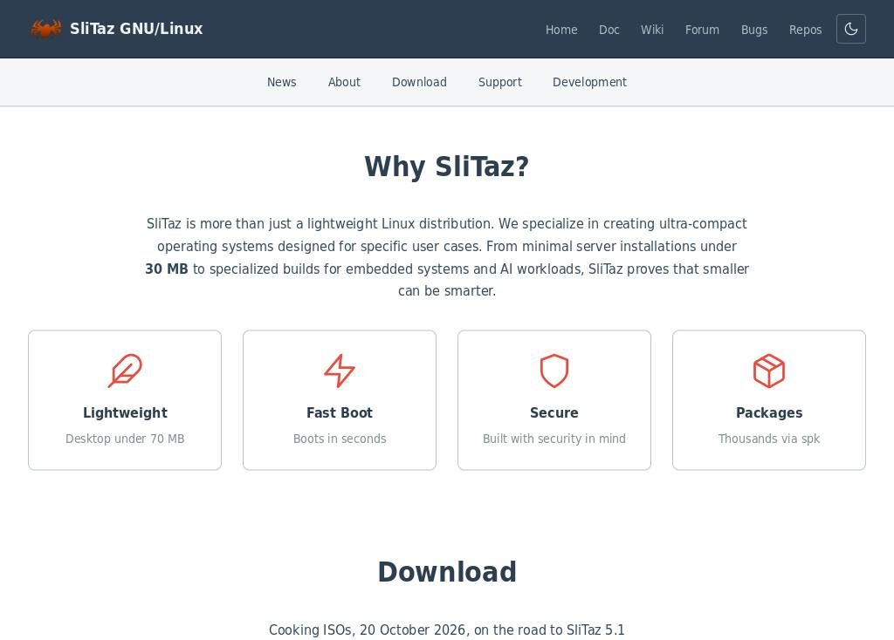
Soie 0.1.2
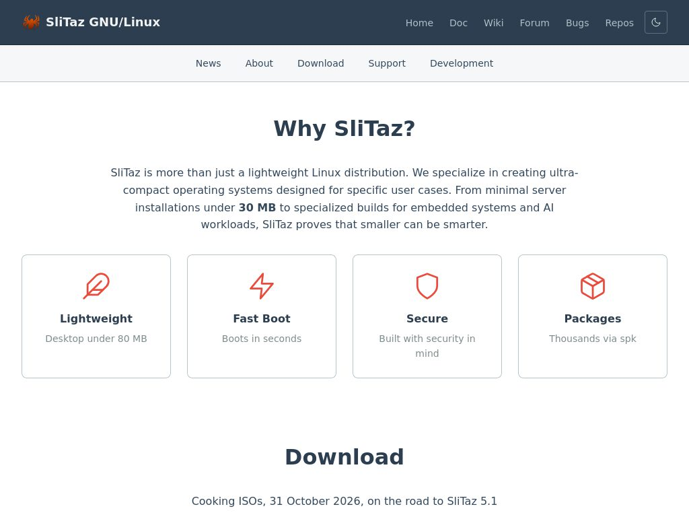
Firefox 153 ESR
Wikipedia
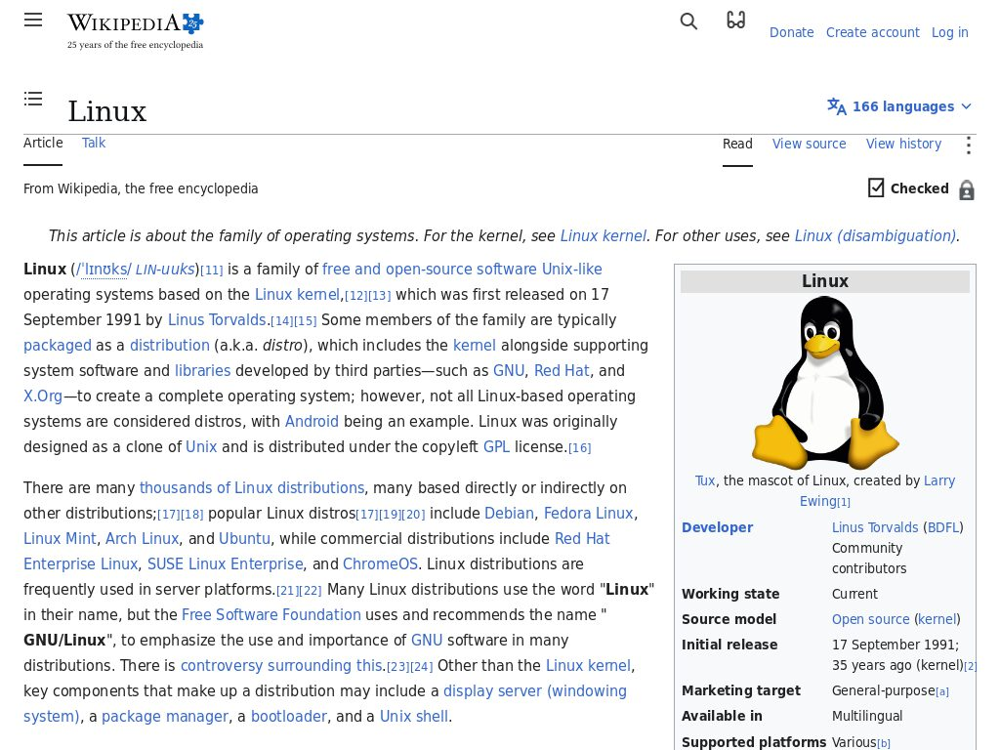
Soie 0.1.2
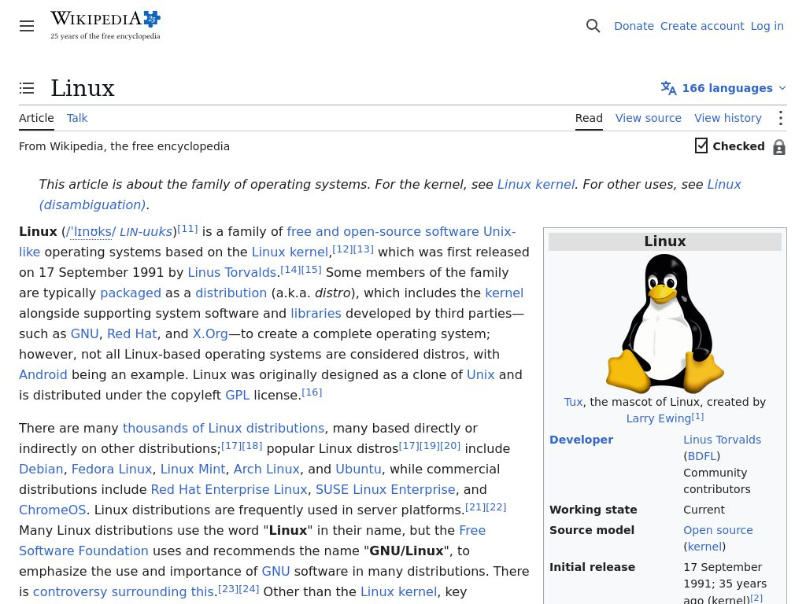
Firefox 153 ESR
Wikipedia content under CC BY-SA.
MDN Web Docs
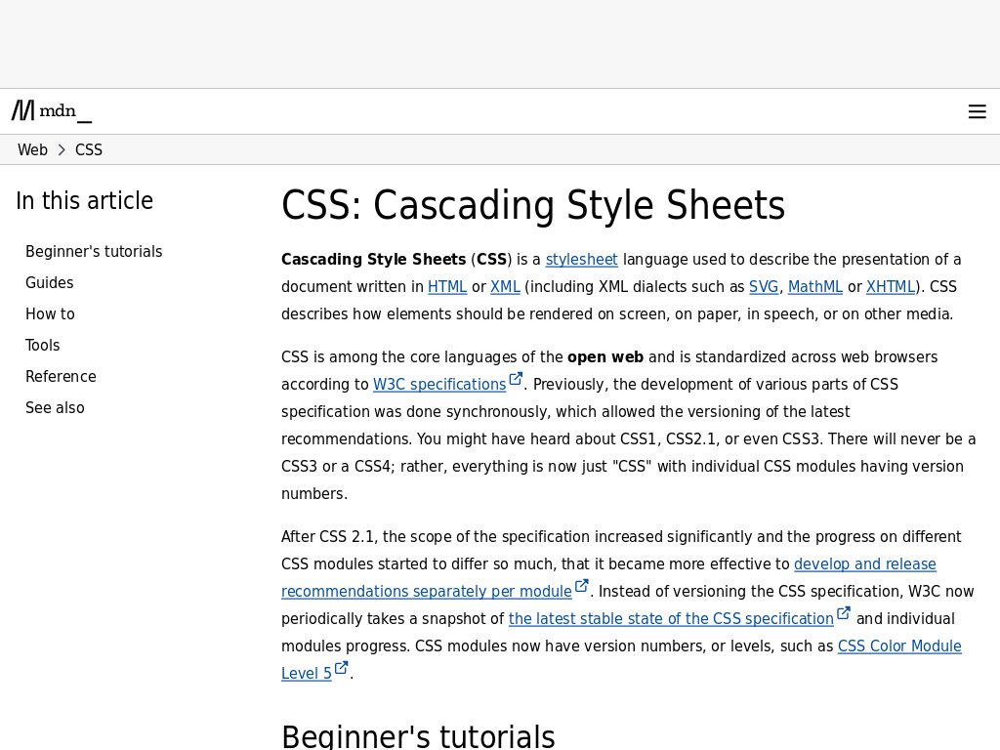
Soie 0.1.2
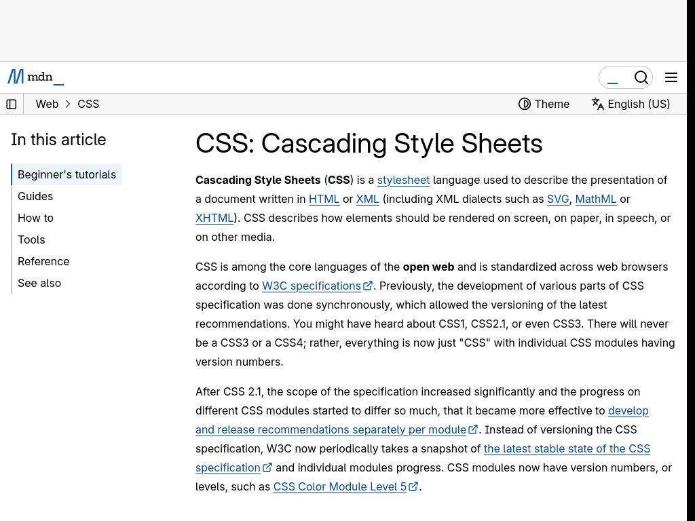
Firefox 153 ESR
MDN content under CC BY-SA. Some of MDN's top bar controls are still missing in Soie.
Hacker News
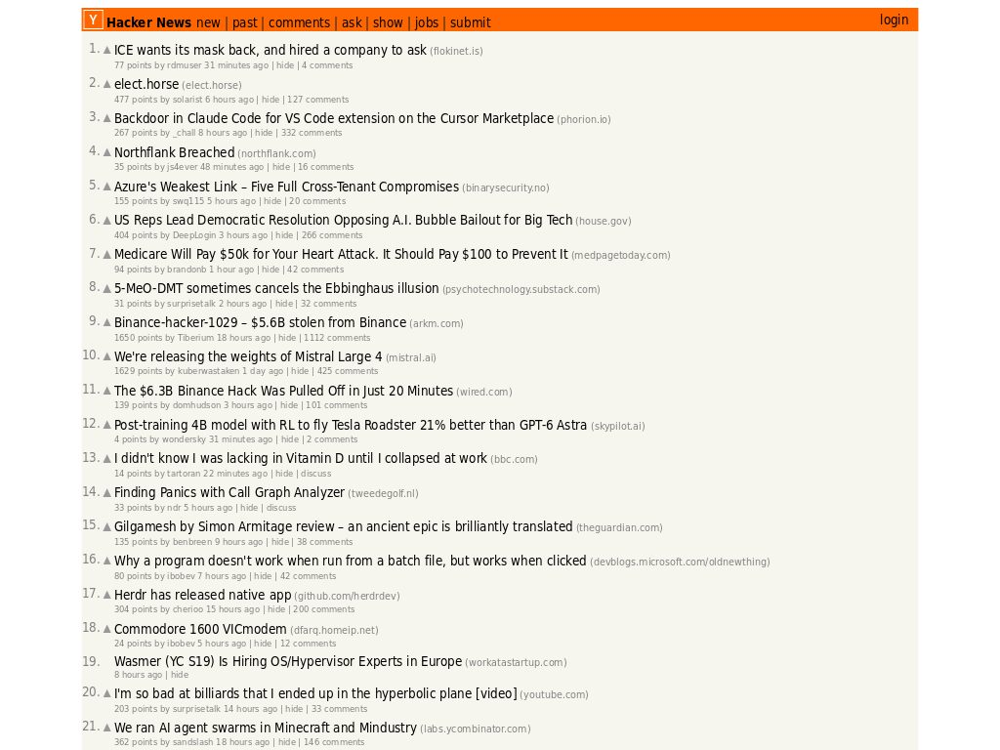
Soie 0.1.2
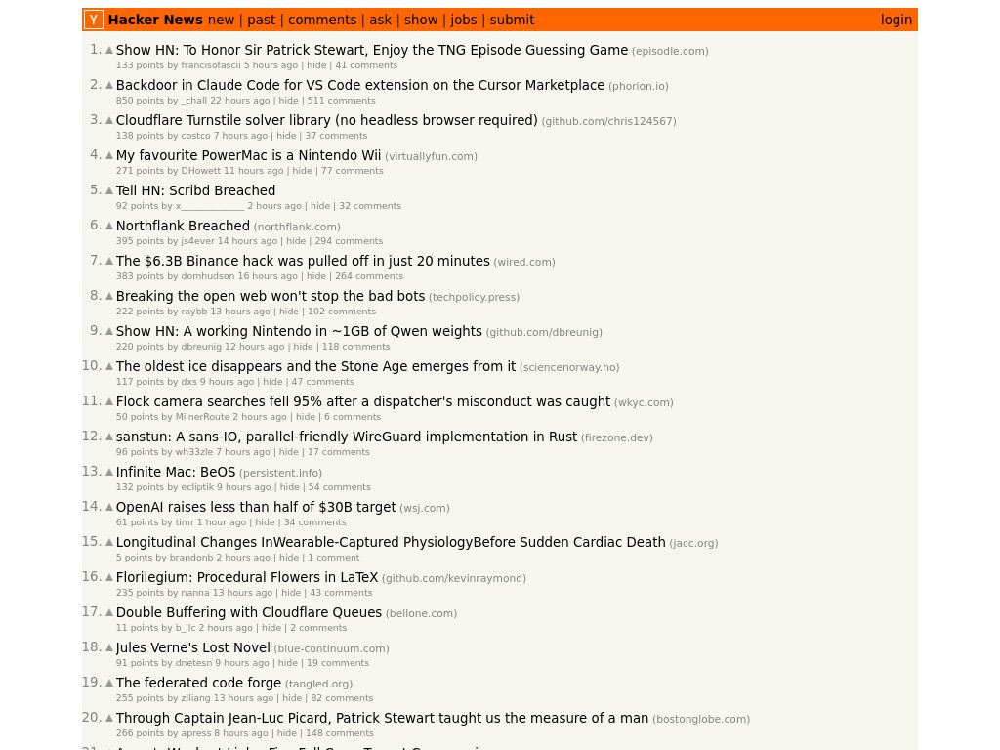
Firefox 153 ESR
What is inside
One engine, a few extensions, small browsers: each piece does one
thing and every choice is written down in
DECISIONS.md.
libsoie
The engine. HTML parsed the way the WHATWG says (it passes
the html5lib tree tests), the CSS cascade (it passes
css-parsing-tests), blocks, inline text, tables, flexbox,
grid, SVG, painted with FreeType and HarfBuzz. Restyle and
layout are incremental: a page that changes costs what
changed.
Extensions
What a browser needs beyond the engine, each a small module:
cookies, content blocking, WebP, JavaScript with QuickJS
(DOM, fetch, workers), plus audio and video with FFmpeg,
Media Source Extensions included: YouTube plays.
Browsers
xsoie for X11 and wsoie for Wayland, for the
lightest systems; SoieView, a GTK 3 widget for
Toile, the SliTaz
desktop browser.
Solid
Reviewed before release by AI models other than the one
that wrote the code: a security audit by Grok, a second one
by Claude Fable 5.1 with AddressSanitizer and a fuzzer,
and a performance review. The tests run under
AddressSanitizer and on real sites; random changes to pages
are checked against a fresh layout.
Simple
Plain C99, a plain Makefile, no toolkit in the engine, no
code generator, no build system to learn: make
and it builds on old compilers too. Under 55,000 lines of
code, blank lines and comments left out:
tools/loc.sh counts them.
Yours
BSD licence. A C API to embed the engine (soie.h),
an ABI for extensions (ext.h) and a headless
renderer soie-render, for tests and
screenshots.
Against the Web Platform Tests, the test suite the
big engines share: 66 % of 100 flexbox reftests and
49 % of 100 grid reftests pass, compared as WPT compares
them. A fixed subset at a pinned WPT commit, run by
tests/wpt
in 35 seconds; each failure is a layout bug on the list.
How Soie was built
Soie was written in a week by one person and an AI. Christophe
Lincoln designed the engine, set the constraints (plain C99, old
compilers, i486), decided every architecture question and wrote
them down in
DECISIONS.md.
Claude wrote the code. Every change was tested and approved by
Christophe, who created SliTaz twenty years ago and has
shipped free software ever since; the AI reviews above came on
top of that. Pages were tested by hand on dozens of real sites;
every bug was reported back and fixed, and most fixes came with a
test in the
test corpus.
Two things made this possible: twenty years of building a Linux
that fits on anything, and a willingness to read what was
written. The result is a code base a single person can read from
end to end, and we expect it to be read.
Get Soie 0.1.5
On SliTaz, the lightest way to browse the web:
spk-add xsoie
Soie comes in many packages, so that a system installs only what it
needs:
Package
What it holds
soie
the engine, with cookies, content blocking, WebP and JavaScript
From the sources on any
GNU/Linux with a C99 compiler, GNU make, pkg-config, FreeType,
HarfBuzz, libpng and libjpeg (the browsers also want Xlib or
Wayland, GnuTLS and zlib; the extensions libwebp, FFmpeg and
ALSA, and QuickJS 2026-06-04):
wget https://hg.slitaz.org/soie/archive/0.1.5.tar.gz
tar xzf 0.1.5.tar.gz && cd soie-0.1.5
make && make check
make install PREFIX=/usr
Soie is only young, and we would rather say it here than let you find
out:
Google search and YouTube may stop answering after a while:
their bot checks do not trust a JavaScript engine that is not
SpiderMonkey or V8.
No JavaScript inside iframes yet.
No HSTS: an https page may be redirected to http.
No :hover or :focus styles.
No tabs in xsoie and wsoie (Toile has them).
Some pages still lay out differently from Firefox: the
comparisons above show where we stand.
YouTube, forty seconds apart
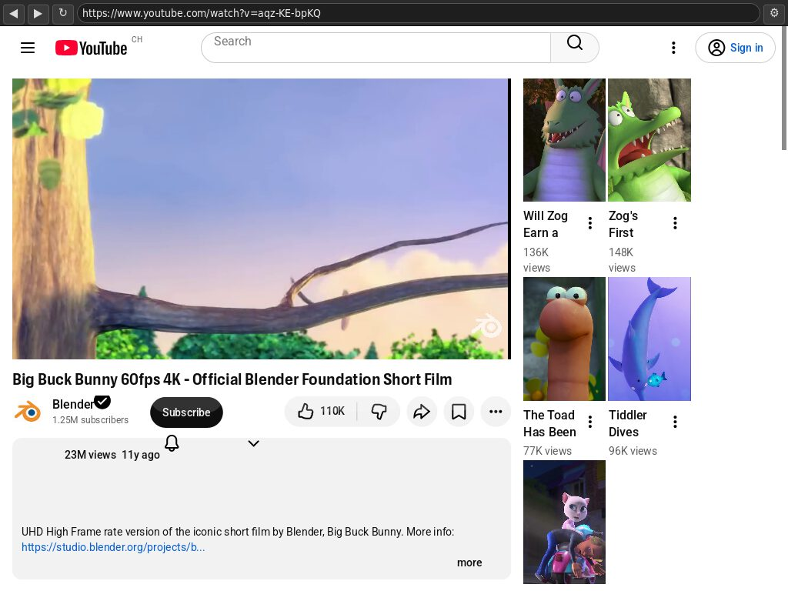
Playing, xsoie 0.1.1, 329 MB
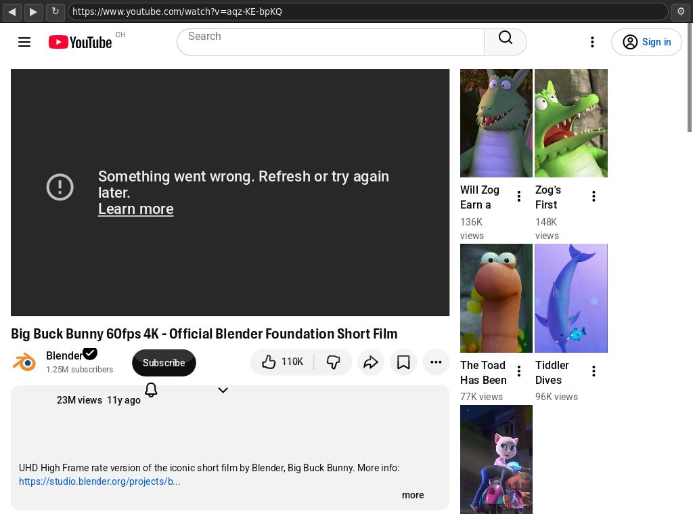
Stopped by YouTube, the same session
October 30, 2026, Big Buck Bunny (Blender Foundation,
CC BY 3.0), cookies refused. Memory is the PSS of xsoie while it
played. Video plays, Media Source Extensions included; it is
YouTube that stops sending it, sometimes after a minute,
sometimes not at all.